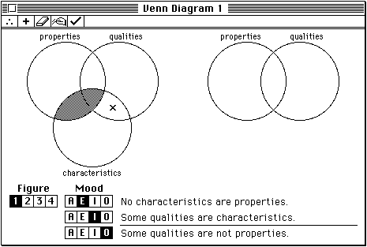

Handling Null Events
Recall that the Event Manager sends your application a null event when there are no other events to report. TheWaitNextEventfunction reports a null event by returning a function result ofFALSEand by setting thewhatfield of the event record tonullEvt.When your application receives a null event, it can perform idle processing. Your application should do only minimal processing in response to a null event, so that other processes can use the CPU and so that the foreground process (or your application, when it is in the foreground) can respond promptly to the user. For example, if your application is in the foreground when it receives a null event, you can make the insertion point blink in the active window (if your application supports text entry).
If your application receives a null event in the background, it can perform tasks or do other processing while in the background. However, your application should not perform any tasks that would slow down the responsiveness of the foreground process. Your application also should not interact with the user if it is in the background.
The Venn Diagrammer application uses null events in a somewhat interesting way. Whenever the application receives a null event, it calls the application-defined procedure
- Note
- Remember that your application receives null events while it is in the background only if you've set the
canBackgroundflag in your application's'SIZE'resource. If you don't want your application to receive null events when it is in the background, you should set thecannotBackgroundflag.DoIdle, which checks to see whether the user wants it to automatically adjust the Venn diagram and whether the diagram might need adjusting. If both of these are true, thenDoIdlecalls the application-defined procedureDoVennIdleto perform the automatic adjustment. TheDoIdleprocedure is defined in Listing 9-3.Listing 9-3 Handling null events
PROCEDURE DoIdle (myEvent: EventRecord); VAR myWindow: WindowPtr; myHandle: MyDocRecHnd; BEGIN myWindow := FrontWindow; IF IsAppWindow(myWindow) THEN IF gAutoAdjust THEN BEGIN myHandle := MyDocRecHnd(GetWRefCon(myWindow)); IF myHandle^^.needsAdjusting THEN DoVennIdle(myWindow); END; END;The document record contains the fieldneedsAdjusting, which is set toTRUEeach time the user clicks anywhere within the Venn diagram circles. If the user's preference is for automatic diagram adjustment, thenDoIdlecalls the application-defined procedureDoVennIdleto adjust the diagram. Figure 9-2 shows the state of a diagram needing adjustment, and Figure 9-3 shows the same diagram afterDoVennIdlehas adjusted
the diagram.Figure 9-2 A Venn diagram before automatic adjusting
- Note
- The
DoVennIdleprocedure is not defined in this book. In addition to determining whether and how to adjust the diagram,DoVennIdleresets theneedsAdjustingfield of the document record toFALSE.
Figure 9-3 A Venn diagram after automatic adjusting
